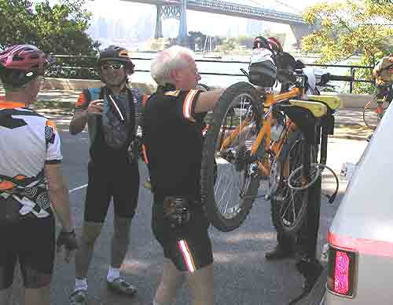
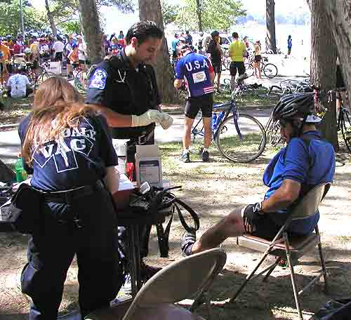
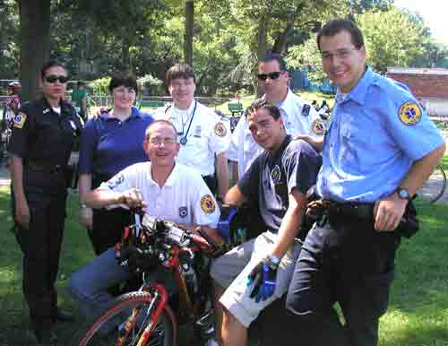
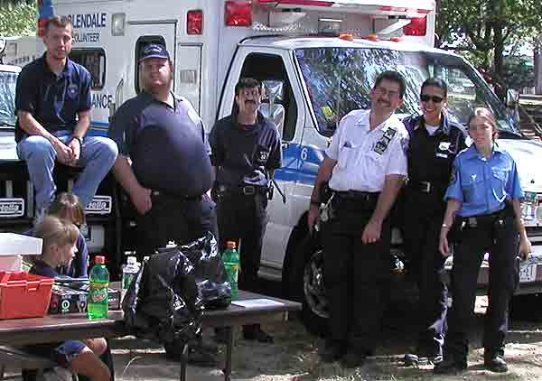
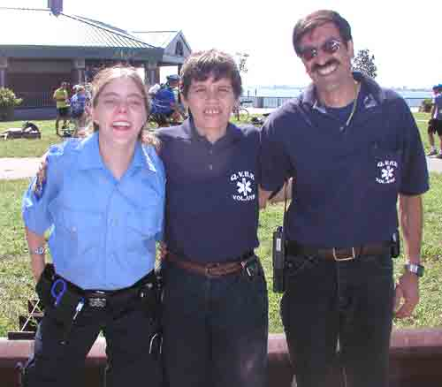
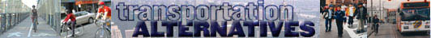
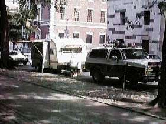
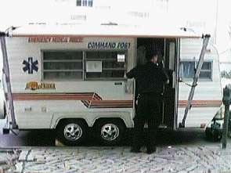
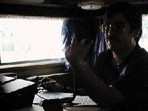
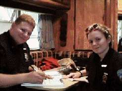

Emergency Medical RESCUE Of NYC
NYC's First Volunteer BLS-D First Response Unit
One Of Our Larger Events Is The NYC
The Century Bike Tour is America's only fully urban century ride. The riders have a choice of distance: 100, 75, 55, 35 and 12 mile routes and can ride at their own pace. Emergency Medical Rescue and the Volunteer EMS providers of NYC have been proud to provide EMS, Logistics, and Communication Services for the bike tour for over five years.







Here is Our Command Post
Setup On 5 th Ave and East 101 Street Outside Of Central Park

Our Comand Post Trailer Is A 18 Foot 1981 Sunline Trailer
 
M. Grillo Manning the Radio / M. Jeffries & K. Smath Taking Care Of Paper Work
Cars 4 Causes has partnered with Emergency
Medical Rescue of New York City.
Cars 4 Causes specializes in car donations and your donation through
Cars
4 Causes will help raise money for Emergency Medical Rescue of New York City.
Click the banner below to donate your car today!
Help Emergency Medical Rescue of New York City When You Search or Shop!
 |
 |